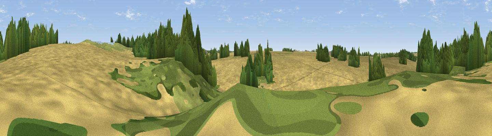

Tulip Hill
#46110 in England · top 93% of its area beats it · near Great DunhamWhere it is
The exact computed spot (TF 85272 15551). Click the marker for map links.
The view, rendered

A 360° render of this exact spot computed from the terrain model, tree cover and land cover — summer colours, afternoon light, calibrated against photographs of famous viewpoints. Real trees, hedges and buildings will differ in detail.
The panorama
Grey silhouette: terrain skyline in each direction (720 bearings, Earth curvature and refraction included). Dashed green: skyline with trees (+15 m) and buildings (+8 m) as obstacles. Blue strip: how far the ground is visible on each bearing.
Where the view opens
Wedge length = distance to the farthest visible ground on that bearing (vegetation-aware). Rings at 10, 25 and 50 km.
What fills the view
85% cropland · 7% woodland · 6% grassland · 2% water
Angular shares of the visible panorama (visual magnitude), not map area. Landscape diversity 0.25 (0–1 Shannon).
Key numbers
More beautiful places nearby
The staircase of upgrades: each row has a higher view potential than everything closer. Driving times are estimates from straight-line distance, calibrated against real road routing — check an actual route before setting out.
| Place | Direction | Drive | Score |
|---|---|---|---|
| Dunham Lodge | SE · 4 km | ~8 min | 19.6 |
| Harpley Hill | NNW · 13 km | ~24 min | 21.9 |
| Viewpoint near Middleton | W · 18 km | ~31 min | 44.0 |
| Viewpoint near Sandringham | NW · 22 km | ~36 min | 45.6 |
| Viewpoint near Burnham Market | N · 26 km | ~41 min | 49.2 |
| Viewpoint near Morston | NNE · 34 km | ~52 min | 53.5 |
| Viewpoint near Salthouse | NE · 34 km | ~52 min | 65.4 |
| Viewpoint near Weybourne | NE · 37 km | ~55 min | 68.3 |
52.70591, 0.74087 · source: osm peak · position refined by local search. Computed location — check access rights before visiting.